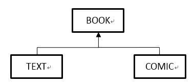
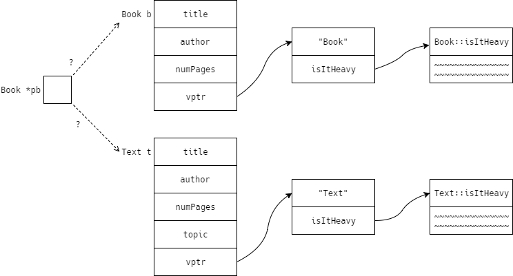
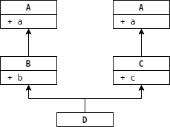
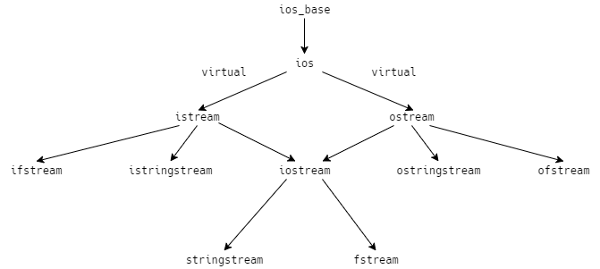

CS 246 - Object-Oriented Development |
|
| Instructor: | Brad Lushman |
|---|---|
| Office: | DC3110 |
| Email: | brad.lushman@uwaterloo.ca |
| Website: | https://www.student.cs.uwaterloo.ca/~cs246/ |
| Note: | All program codes below are provided by Prof. Lushman in class. |
Lecture 13 - 24/10/2017
Module 4 - C++ (Part 3), UML and Design Pattern
Static Fields and Methods
What if we want to track the number of times a method is ever called? Or how many Students are created?
Static Members - associated with the class itself, not with any specific instance (object)
Example: How many Student had been created?
01 struct Student {
02 ...
03 static int numInstances;
04 Student(...): ... {
05 ++numInstances;
06 }
07 };
08
09 // studnet.cc
10 int Student::numInstances = 0;
Static fields must be defined external to the class.
Static member functions don't depend on a specific instance of the class (no this parameter); it can only access static fields and call other static methods.
01 struct Student {
02 …
03 static int numInstances;
04 …
05 static void printNumInstances() {
06 cout << numInstances << endl;
07 }
08 };
09
10 // studnet.cc
11 int Student::numInstances = 0;
12 Student billy{70, 80, 90};
13 Student jane{80, 90, 100};
14 Student::printNumInstances();
System Modelling
Building on object-oriented operating system involves planning.
Popular standard: UML (Unified Modelling Language)
Modelling a class:
Relationship: Composition of Classes
01 class Vec {
02 int x, y, z;
03 public:
04 Vec(int x, int y, int z): x{x}, y{y}, z{z} {}
05 };
06 // Two Vecs define a plane
07 class Plane {
08 Vec v1, v2;
09 };
10 Plane p; // this does NOT work
Notice that we can't initialize v1 and v2 (step2) since no default constructor for Vec.
01 class Plane {
02 Vec v1, v2;
03 public:
04 Plane(): v1{1,0,0}, v2{0,1,0} {}
05 };
In line 4, v1{1, 0, 0} means initialize v1 to Vec{1, 0, 0}.
Embedding one object inside another (for example, Vec inside Plane) called composition.
Relationship between Plane and Vec called “owns-a”.
For example, a Plane owns a Vecstrong> object (in fact, two of them).
If A owns a B then typically, B has no identity outside A (no independent existence).
If A is destroyed, B is destroyed.
If A is copied, B is copied (deep copy).
Example:
A car owns four wheels - a wheel is part of the car.
If we destroy the car, we also destroy the wheels.
If we copy the car, we copy the wheels too.
Implementation is usually as composition of class
Modelling:
Aggregation: Compare car parts in a car ("owns a") v.s. car parts in a catalogue
Catalogue contains the parts, but the parts have an independent existence.
This is a "has-a" ("aggregation") relationship.
If A "has a" B, then typically B has an existence apart from its associtation with A.
If A is destroyed, B still lives on.
If A is copied, B is not (shallow copy). That is, copies of A share the same B.
Example: Ducks in a pond.
Typical Implementation: pointer fields
01 class Pond {
02 Duck *ducks[maxDucks];
03 };
Specialization (Inheritance)
Suppose you want to track your collection of Books:
01 class Book {
02 string title, author;
03 int numPage;
04 public:
05 Book(…);
06 };
For textbooks: also a topic
01 class Test {
02 string title, author;
03 int numPages;
04 string topic;
05 public:
06 Text(…);
07 };
For comic books: also a hero
01 class Comic {
02 string title, author;
03 int numPages;
04 string hero;
05 public:
06 Comic(…);
07 };
The code above is okay, just okay.
But it doesn’t capture the relationship among these classes.
And how do we create an array (or list) that contains a mixture of these?
In C, we would...
1) use a union
01 union BookTypes{Book *b; Text *t; comic *c;};
02 Booktypes myBooks[20];
2)Array of void*: Pointer to anything.
These two methods are not type-safe.
But... We know that Text and Comic are kinds of Book - a Book with extra features.
To model in C++ - Inheritance.
01 class Book {
02 string title, author;
03 int numPages;
04 public:
05 Book(…);
06 …
07 };
08
09 class Text : public Book {
10 string topic;
11 public:
12 Text(…);
13 …
14 };
15
16 class Comic : public Book {
17 string hero;
18 public:
19 Comic(…);
20 …
21 };
class Book is called "base class" (or superclass).
The class Text and class Comic are called "derived classes" (or subclasses).
Subclasses inherit fields and methods from the supberclass. So Text and Comic get title, author, numPages fields.
Any method that can be called on Book, cna be also called on Text and Comic.
What can see these members?
Book, so outsiders can't see them.
Can Text and Comic see them? No.
Even subclasses can't see them!
Example:Text t;
t can't access t.author.
But t can call t.getAuthor(); (public method).
How do we initialize a Text?
01 class Text : public Book {
02 …
03 public:
04 Text(string title, …, string topic): title{title}, …, topic{topic} {}
05 };
The code above is wrong!
title is private in Book, not your (Text) field.
Lecture 14 - 26/10/2017
Recall:
01 class Text : public Book {
02 string topic;
03 public:
04 Text(string title, string author, int numPages, string topic):
05 title{title}, author{author}, numPages{numPages}, topic{topic} {}
06 ...
07 };
Note that the code above doesn't work though.
The MIL says, "You can only change your own fields, not others."
Wrong for 2 reasons:
-
title, etc. do not accessible inText -
when an object is created:
- space is allocated
-
superclass part is constructed (NEW)
this doesn't work -Bookhas no default constructor - fields constructed in declaration order
- constructor body runs
Destruction:
- destructor body runs
- fields destructed in reverse declaration order
- superclass part destructed (NEW)
- space deallocated
Solution: invoke Book's constructor in the MIL
01 class Text : public Book {
02 ...
03 public:
04 Text(string title, string author, int numPages, string topic):
05 Book{title, author, numPages}, topic{topic} {}
06 ...
07 };
If the superclass has no default constructor, subclass must invoke a superclass constructor in its MIL.
In line 5, Book{title, author, numPages} is the step 2 for object creation, topic{topic} is the step 3 for object creation and {} is the step 4 for object creation.
It is a good reasons to keep superclass fields inaccessible to subclasses.
If you want to give subclasses access to certain members, use protected access.
01 class Book {
02 protected:
03 string title, author;
04 int numPages;
05 public:
06 Book(...);
07 ...
08 };
All the fields under protected, before public, are accessible to Book and its subclasses ONLY.
01 class Text : public Book {
02 ...
03 public:
04 ...
05 void addAuthor(string auth) {
06 author t = auth;
07 // Okay to do that if author is protected
08 }
09 };
It is not a good idea to give subclasses unlimited access to fields.
A better way to do it is make fields private but provide protected accessors and mutators.
01 class Book {
02 string title, author;
03 int numPages;
04 protected:
05 string getTitle() const;
06 void setAuthor(string auth);
07 public:
08 Book(...);
09 bool isHeavy() const;
10 };
The relationship among Text, Comic and Book is called "is-a".
- a
Textis aBook - a
Comicis aBook
In UML...

Implement via public inheritance.
Now consider isHeavy() - when is a book heavy?
For ordinary Book, 200 pages.
For Text, 500 pages.
For Comic, 30 pages.
01 class Book {
02 ...
03 public:
04 ...
05 bool isHeavy() const {
06 return numPages > 200;
07 }
08 };
09
10 class Comic : public Book {
11 ...
12 public:
13 bool isHeavy() const {
14 return numPages > 30;
15 }
16 };
17
18 Book b{"small book", ..., 50};
19 Comic c{"big comic", ..., 40, ...};
20 cout << b.isHeavy(); // display false
21 cout << c.isHeavy(); // display true
Since inheritance models "is-a", we can do this:
01 Book b = Comic{"big comic", ..., 40, ...};
Question:
Is b heavy?
That is, what will b.isHeavy() run?
Book::isHeavy() or Comic::isHeavy()?
Answer:
b is not heavy, aka Book::isHeavy() ran.
But why?
Book : title author numPages
Comic: title author numPages Hero
01 Book b = Comic{...};
02 // tries to fit a Comic where there is only space for a Book
What will happens?
Comic is sliced.
The Hero fields chopped off, Comic is now a Book.
So it must be Book::isHeavy().
When accessing objects through pointers, slicing is unnecessary and doesn't happen.
01 Comic c{…, …, 40, …};
02 Book *pb = &c;
03 Comic *pc = &c;
04 cout << pc->isHeavy(); // display true
05 cout << pb->isHeavy(); // display false
Book::isHeavy() still runs when we access pb->isHeavy().
Same object behaves differently depending on what kind of pointer is pointing at it.
Compiler uses the type of the pointer (or reference) to pick the method.
It does not consider the actual type of the object.
It means a comic is only a Comic when points to a Comic pointer.
It is probably not what we want.
How do we make Comic act like a Comic, even when points at Book pointer?
Answer: declare the method virtual
01 class Book {
02 ...
03 protected:
04 int numPages;
05 public:
06 Book (...);
07 virtual bool isHeavy() const {
08 return numPages > 200;
09 }
10 ...
11 };
12
13 class Comic : public Book {
14 ...
15 public:
16 bool isHeavy() const override {
17 return numPages > 30;
18 }
19 };
20
21 Comic c{..., ..., 40, ...};
22 Book *pb = &c;
23 Book &rb = c;
24 Comic *pc = &c;
25 cout << pc->isHeavy(); // display true
26 cout << pb->isHeavy(); // display true
27 cout << rb.isHeavy(); // display true
Comic::isHeavy() runs in all 3 cases.
Virtual methods choose which class' method to run, based on the actual type of the object at run-time.
Example: My Book Collection
01 Book *myBooks[20];
02 ...
03 for (int i = 0; i < 20; i++) {
04 cout << myBooks[i]->isHeavy() << endl;
05 }
myBooks[i]->isHeavy() uses...
Book::isHeavy()forBookText::isHeavy()forTextComic::isHeavy()forComic
This accommodates multiple types under one abstraction.
It's called "polymorphism" (aka "many forms").
Note:
This is why a function void f (istream &in) can be passed an ifstream - ifstream is a subclass of istream.
Lecture 15 - 31/10/2017
Destructor Revisited
01 class X {
02 int *x;
03 public:
04 X(int n): x{new int[n]} {}
05 ~X() {delete [] x;}
06 };
07
08 class Y : public X {
09 int *y;
10 public:
11 Y(int m, int n): X{n}, Y{new int[m]} {}
12 ~Y() {delete [] y;}
13 };
Y's destructor will call X's destructor (step 3), so no need to call delete [] x;.
X *myX = new Y{10, 20};
...
delete myX; // Leaks! Why?
In line 3, delete myX; calls ~X(), but not ~Y(), so only x (but not y) is freed.
How can we ensure that deletion through a pointer to the superclass will call the subclass destructor?
Declare the destructor virtual.
01 class X {
02 ...
03 public:
04 ...
05 virtual ~X() {delete [] x;}
06 };
ALWAYS make the destructor virtual in classes that are meant to have subclasses.
Even if the destructor doesn't do anything.
If a class is not meant to have subclasses, you can declare it final:
01 class Y final : public X {...};
02 // you are not allowed to take a subclass Y.
Pure Virtual Methods and Abstract Classes
01 class Student {
02 public:
03 virtual float fees();
04 };
Two kinds of students - Regular and Co-op.
So we have two subclasses.
01 class Regular : public student {
02 public:
03 float fees() override; // regular students' fees
04 };
05
06 class Coop : public Student {
07 public:
08 float fees() override; // co-op students' fees
09 };
What should we put for Student::fees?
Not sure - every student should be either Regular or Co-op.
We can explicitly give Student::fees NO implementation:
01 class Student {
02 ...
03 public:
04 virtual float fees() = 0;
05 };
In line 4, virtual float fees() = 0; method has no implementation.
This is called a pure virtual method.
A class with a pure virtual method cannot be instantiated.
Student s; Error, you are not allowed to do that!!!
It called an abstract class.
The purpose is to organise subclasses.
Subclasses of abstract classes are also abstract, unless they implement the pure virtual methods.
Non-abstract classes - called concrete classes.
UML
- virtual of pure virtual methods: italics
- abstract classes - class name in italics
- protected: #
- static
Inheritance of Copy/Move
01 class Book {
02 ...
03 public:
04 // defines copy/move constructor/assignment
05 };
06
07 class Text : public Book {
08 string topic;
09 public:
10 // does not define copy/move operations
11 };
12
13 Text t{"Algorithms", 50000, "CS"};
14 Text t2 = t; // no copy constructor in Text, what happens?
It will calls Book's copy constructor.
Then it goes field-by-field (i.e. default behaviour) for the Text part.
Same for other operators.
To write your own operations:
01 Text::Text(const Text &other): Book{other}, topic{other.topic} {}
02
03 Text& Text::operator=(const Text &other) {
04 Book::operator=(other);
05 topic = other.topic;
06 return *this;
07 }
08
09 Text::Text(Text &&other): Book{other}, topic{other.topic} {}
Notice that the move constructor in line 9 is wrong.
other refers to an rvalue but other is an lvalue.
01 // correct version
02 Text::Text(Text &&other):
03 Book{std::move(other)}, topic{std::move(other.topic)} {}
Note: even though other/other.topic refer to rvalues, they themselves are lvalue.
std::move(...) forces an lvalue x to be treat as an rvalue.
So the "move" versions of the operations run.
01 Text& Text::operator=(Text &&other) {
02 Book::operator=(std::move(other));
03 topic = std::move(other.topic);
04 return *this;
05 }
These operators are equivalent to default behaviour.
It specialises as needed for Node, etc.
Now consider:
01 Text t1{...}, t2{...};
02 Book *pb1 = &t1, *pb2 = &t2;
What if we do *pb1 = *pb2?
It is Book::operator= that runs.
Partial Assignment: copies only the Book part.
How can we fix this?
Try making operator= virtual.
01 class Book {
02 ...
03 public:
04 virtual Book& operator=(const Book &other) {...}
05 };
06
07 class Text : public Book {
08 ...
09 public:
10 Text& operator=(const Text &other) override {...}
11 };
Note:
Different return types are allowed, but parameter must be the same, or ti's not an override (and won't compile), violates "is-a".
01 // correct version
02 Text& operator=(const Book &other) override {...}
So assignment of a Book's object to a Text's variable would be allowed.
01 Text t{...};
02 Book b{...};
03 Text *pt = &t;
04 Book *pb = &b;
05 *pt = *pb; // use a Book to assign a Text - BAD!!!
Also:
01 Comic c{...};
02 Comic *pc = &c;
03 Text *pt = *pc; // REALLY BAD!!!
If operator= is non-virtual, partial assignment through base class pointers.
If virtual, compiler allow mixed assignment - BAD.
Recommendation - all superclass should be abstract.
Lecture 16 - 02/11/2017
Recall:
01 *pb1 = *pb2;
02 // the Book pointer pointing at Texts
If operator= is...
- non-virtual: partial assignment
- virtual: mixed assignment
Recommend: all superclass abstract
01 class AbstractBook {
02 string title, author;
03 int numPages;
04 protected:
05 AbstractBook& operator=(const AbstractBook &other);
06 public:
07 AbstractBook(...);
08 virtual ~AbstractBook() = 0;
09 // need at least one pure virtual method
10 // if no others, use the destructor
11 };
12
13 class NormalBook : public AbstractBook {
14 public:
15 NormalBook(...);
16 ~NormalBook();
17 NormalBook& operator=(const NormalBook &other) {
18 AbstractBook::operator=(other);
19 return *this;
20 }
21 // other classes - similar
22 };
23
24 *pt1 = *pt2; // doesn't work now (AbstractBook *pt1, *pt2)
The keyword protected in line 4 prevents assignment through base class pointers from compiling, but implementation still available to subclasses.
Note: These codes above prevent partial and mixed assignment; they don't link.
01 AbstractBook::~AbstractBook() {}
Note:
A virtual destructor must be implemented, even if it is pure virtual.
Step 3 - superclass destructor WILL get called - so it must exist.
Huge topic - just the highlights.
01 class List {
02 struct Node;
03 Node *theList;
04 ...
05 };
06
07 struct List::Node {
08 int data;
09 Node *next;
10 ...
11 };
What if you want to store something else but not integer?
Do we need to write a whole new class?
We can write a template - class parameterised by a type.
01 template <typename T> class List {
02 struct Node;
03 Node *theList;
04 public:
05 class Iterator {
06 Node *p;
07 ...
08 public:
09 ...
10 T& operator*();
11 ...
12 };
13 };
14
15 template <typename T> struct List<T>::Node {
16 T data;
17 Node *next;
18 };
19
20 template <typename T> class Stack {
21 int size, cap;
22 T *theStack;
23 public:
24 Stack() {...}
25 void push(T x) {...}
26 T top() {...}
27 void pop() {...}
28 };
29
30 // Client:
31 List<int> l1;
32 List<List<int>> l2;
33 l1.addToFront(3);
34 l2.addToFront(l1);
35
36 for (List<int>Iterator it = l1.begin(); it != l1.end(); ++it) {
37 cout << *it << endl;
38 }
39 // or you can do the following:
40 for (auto n : l1) {
41 cout << n << endl;
42 }
The compiler specialises templates at the source code level, before compilation (i.i. the compiler writes new List classes for you.)
The Standard Template Library (STL)
- Large number of useful templates
Example: dynamic-length arrays - vectors
01 #include <vector>
02 using namespace std;
03
04 int main() {
05 // create vector
06 vector<int> v{4,5}; // v[4,5]
07 vector<int> w (4,5); // w[5,5,5,5]
08
09 // add element into vector
10 v.emplace_back (6); // v[4,5,6]
11 v.emplace_back (7); // v[4,5,6,7]
12
13 // looping over vectors
14 // version 1
15 for (int i = 0; i < v.size(); i++) {
16 cout << v[i] << endl;
17 }
18 // version 2
19 for (vector<int>::iterator it = v.begin(); it != v.end(); ++it) {
20 cout << *it << endl;
21 }
22 // version 3
23 for (auto &n : v) {
24 cout << n << end;
25 }
26
27 // to iterate in reverse
28 // version 1
29 for (vector<int>::reverse_iterator it = v.begin(); it != v.rend(); ++it) {
30 ...
31 }
32 // version 2
33 for (auto it = v.rbegin(); it != v.rend(); ++it) {
34 ...
35 }
36
37 // remove last element
38 v.pop_back(); // v[4,5,6]
39
40 // use iterators to remove item from inside a vector
41 auto it = v.erase(v.begin()); // erases v[0]
42 auto it = v.erase(v.begin() + 3); // erases v[3]
43
44 // it returns an iterator pointing just after the point of erasure
45 // so you can do this:
46 it = v.erase(it); // erases the new element v[3]
47 it = v.erase(v.end() - 1); // erases the last element
48
49 return 0;
50 }
v[i] returns the ith element of v.
It is unchecked. If you go out of bounds, undefined behaviour.
v.at(i) is the checking version of v[i].
What happens if you go out of bounds?
What should happen?
Problem:
vector's code can detect the error, but doesn't know what to do about it.
Client can respond, but can't detect the error.
C solution:
Functions return a status code, or set the global variable errno.
It leads to awkward programming.
It encourages programmers to ignore error checks.
C++ solution:
When an error condition, the function raises an exception.
What happens?
By default, execution stops (intentional crash).
But we can write handlers to catch exceptions to deal with them.
vector<T>at() throws exception of type std::out_of_range when it fails.
Handle as follows:
01 #include <stdexcept>
02
03 int main() {
04 ...
05 try {
06 std::cout << v.at(1000) << std::endl;
07 // statement that may raise an exception go in the try block
08 } catch (std::out_of_range orr) {
09 std::cerr << "Range Error" << std::endl;
10 }
11 ...
12 return 0;
13 }
In line 8, std::out_of_range is a type and oor is an object that was thrown.
Lecture 17 - 07/11/2017
Recall:
01 #include <stdexcept>
02
03 int main() {
04 ...
05 try {
06 cout << v.at(1000) << endl;
07 } catch (out_of_range ex) {
08 cerr << "Range Error" << ex.what() << endl;
09 }
10 ...
11 return 0;
12 }
In line 7, out_of_range is a type and ex is an object.
Now consider:
01 void f() {
02 throw out_of_range{"f"}; // f is what() is
03 }
04
05 void g() {
06 f();
07 }
08
09 void h() {
10 g();
11 }
12
13 int main() {
14 try {
15 h();
16 } catch (out_of_range) {
17 ...
18 }
19 return 0;
20 }
What happens?
main() calls h().
h() calls g().
g() calls f().
f() throws out_of_range.
g() has no handler for out_of_range.
Control goes back through the call chain (unwinds the stack) until a handler is found.
All the was back to main(), main() handles it.
If no handler find, program terminates.
out_of_range is a class, so throw out_of_range{"f"}; is a ctor call (create an out_of_range object).
A handler might do part of the recovery job - execute some corrective code and throw another exception:
01 try {
02 ...
03 } catch (someErrorType s) {
04 ...
05 throw someOtherError{...};
06 }
Or we can always throw the same exception:
01 try {
02 ...
03 } catch (someErrorType s) {
04 ...
05 throw;
06 }
throw; vs throw s;
throw;:
Actual type of s is retained.
throw s;:
throw rethrows a new exception of type SomeErrorType.
s may be a subtype of someErrorType.
A handler can act as a catch-all.
01 try {
02 ...
03 } catch (...) { // the ... this line means "catch all exceptions!"
04 ...
05 }
You can throw anything you want; you don't have to throw object.
Define your own exception class:
01 class BadInput{};
02 try {
03 int n;
04 if (!(cin >> n)) throw BadInput{};
05 } catch (BadInput &) {
06 cerr << "Input not well-formed.";
07 }
BadInput{} is an object and & in line 5 means "catch by reference" (reduces copying).
Some standard exceptions:
length_error: string/vector is too large (i.e. can't resize).
bad_alloc: new fails.
NEVER let a destructor throw exception.
If a destructor throws, program terminates immediately (unless the destructor is tagged with noexcept(false)).
If a destructor throws...
If that destructor was executed during stack unwinding, while another exception is still looking for a handler, you now have two or more active, unhandled exceptions, and the program will abort immediately.
Much more on exceptions later.
Guiding principle:
Program to the interface, not the implementation.
-
abstract base classes define the interface
- work with pointers to abstract base classes and call their methods
-
concrete subclasses can be swapped in an out
- abstraction over a variety of behaviours
Example:
01 class List {
02 ...
03 public:
04 class Iterator : public AbstractIterator {
05 ...
06 };
07 ...
08 };
09
10 class Set {
11 ...
12 public:
13 class Iterator : public AbstractIterator {
14 ...
15 };
16 ...
17 };
18
19 class AbstractIterator {
20 public:
21 virtual int& operator*() = 0;
22 virtual AbstractIterator& operator++() = 0;
23 virtual bool operator!=(const AbstractIterator &other) const = 0;
24 virtual ~AbstractIterator();
25 };
Once you have : public AbstractIterator, then you can write code that operates over iterators:
01 void for_each(AbstractIterator &start,
02 AbstractIterator &finish,
03 void (*f)(int)) {
04 while (start != end) {
05 f(*start);
06 ++start;
07 }
08 }
It work over List and Set.
-
Publish-subscribe model
-
one class: publisher/subject
- generates data
-
one or more subscriber/observer classes
- revive data and react to it
-
one class: publisher/subject
Example:
Publisher = Spreadsheet cells
Observers = Graphs when cells change, graphs update
We can have many different kinds of observer objects; subject should not need to know all the details.
Sequence of method calls:
subject's state is updated-
Subject::notifyObservers()- calls every observer's
notify() - (could be called by the subject, or by some external controller)
- calls every observer's
- each observer calls
ConcreteSubject::getState()to query the state of react appropriately
Example: Horse Races
Subject - publishes winners
Observers - individual bettors - declare victory when their horse wins
We will continue it next lecture.
Lecture 18 - 09/11/2017
Recall: The horse race example from the End of Last Lecture.
01 class Subject {
02 vector<Observer*> Observers;
03 public:
04 void attach(Observer *ob) {
05 observers.emplace_back(ob);
06 } // end attach()
07 void detach(Observer *ob); // remove from observers
08 void notifyObservers() {
09 for (auto &ob:observers) ob->notify();
10 } // end notifyObservers()
11 virtual ~Subject() = 0;
12 Subject::~Subject(){}
13 };
14
15 class Observer {
16 public:
17 virtual void notify() = 0;
18 virtual ~Observer() {}
19 };
20
21 class HorseRace : public Subject {
22 ifstream in; // source of data
23 string lastWinner;
24 public:
25 HorseRace(string source): in{source} {}
26 bool runRace() {
27 return in >> lastWinner?true:false;
28 // true : there was a race
29 // false: no races left
30 } // end runRace()
31 string getState() {
32 return lastWinner;
33 } // end getState()
34 };
35
36 class Bettor:public Observer {
37 HorseRace *subject;
38 string name, myHorse;
39 public:
40 Bettor(...): ... {
41 subject->attach(this);
42 } // end Bettor()
43 ~Bettor() {
44 subject->detach(this);
45 } // end ~Bettor()
46 void notify() {
47 string winner = subject->getState();
48 if (winner == myHorse) {
49 cout << "Win!" << endl;
50 } else {
51 cout << "Lose. :-(" << endl;
52 } // end if else
53 } // end notify()
54 };
55
56 int main () {
57 HorseRace hr{"file.txt"};
58 Bettor Larry{&hr, "Larry", "RunsLikeACow"};
59 // other bettors
60 while (hr.runRace()) {
61 hr.notifyObservers();
62 } // end while
63 } // end main()
Decorator Pattern
- start with a basic window
- add scrollbar
- add menu
Class Component
ConcreteComponent
Decorators
So every decorator is a component AND every decorator has a component.
Example:
Example: Pizza - Let start a pizza company.
01 class Pizza {
02 public:
03 virtual float price() const = 0;
04 virtual string decs() const = 0;
05 virtual ~Pizza();
06 };
07
08 class CrustAndSauce : public Pizza {
09 public:
10 float price() const override {return 5.99;}
11 string desc() const override {return "Pizza";}
12 };
But... No one comes and buys the pizza...
Let's make some changes.
01 class Decorator : public Pizza {
02 protected:
03 Pizza *component;
04 public:
05 Decorator(Pizza *p): component{p} {}
06 ~Decorator() {delete component;}
07 };
08
09 class StuffedCrust: public Decorator {
10 public:
11 StuffedCrust(Pizza *p): Decorator{p} {}
12 float price() const override {
13 return component->price() + 2.69;
14 } // end price()
15 string desc() const override {
16 return component->decs() + " with stuffer crust.";
17 } // end desc()
18 };
19
20 class Topping : public Decorator {
21 string theTopping;
22 public:
23 Topping(string topping, Pizza *p): Decorator{p}, theTopping{topping} {}
24 float price() const override {
25 return component->price() + 0.75;
26 } // end price()
27 string desc() const override {
28 return component->desc() + " with " + theTopping;
29 } // end desc()
30 };
31
32 int main() {
33 Pizza *p1 = new CrustAndSauce;
34 p1 = new Topping("cheese", p1);
35 p1 = new Topping("Mushrooms", p1);
36 p1 = new StuffedCrust(p1);
37 cout << p1->decs() << ' ' << p1->price() << endl;
38 delete p1;
39 } // end main()
Factory Method Pattern - "Virtual Constructor Pattern"
Example:
Write a video game with 2 kinds of enemies: turtles and bullets.
Turtle/Bullet constructors directly.Level that creates enemies.
01 class Level {
02 public:
03 virtual Enemy *createEnemy() = 0; // factory method
04 ...
05 };
06
07 class Easy : public Level {
08 public:
09 Enemy *createEnemy() override {
10 // create mostly turtles
11 } // end createEnemy()
12 };
13
14 class Hard : public Level {
15 public:
16 Enemy *createEnemy() override {
17 // mostly bullets
18 } // end createEnemy()
19 };
20
21 int main() {
22 Level *l = new Easy();
23 Enemy *e = l->createEnemy();
24 ...
25 } // end main()
Template Method Pattern
Lecture 19 - 14/11/2017
Templete Method Pattern
Example: There are red turtles and green turtles in the video game example.
01 class Turtle {
02 public:
03 void draw() {
04 drawHead();
05 drawShell();
06 drawFeet();
07 } // end draw()
08
09 private:
10 void drawHead() {...}
11 void drawFeet() {...}
12 virtual void drawShell() = 0;
13 };
14
15 class RedTurtle : public Turtle {
16 void drawShell() override { /*draw red shell*/ }
17 };
18
19 class GreenTurtle : public Turtle {
20 void drawShell() override { /*draw green shell*/ }
21 };
Subclasses can't change the way a turtle is drawn (head, shell, feet), but can change the way a shell is drawn.
Generalization: the Non-Virtual Interface (NVI) idiom
-
public: interface to the client
- indicates provided behaviour with pre/post-conditions
-
virtual: interface to subclasses
- a "hook" to insert specialised behaviour
What if you later want to separate a virtual funtion into two?
How can you force overriding functions to obey pre/post conditions?
NVI idiom says:
- all public methods should be non-virtual
- all virtual methods should be non-public/private/protected
- (except the destructor)
Example:
01 // this is not followed by NVI
02 class DigitalMedia {
03 public:
04 virtual void play() = 0;
05 };
06
07 // this is followed by NVI
08 class DigitalMedia {
09 public:
10 void play() {
11 doPlay();
12 } // end play()
13 private:
14 virtual void doPlay() = 0;
15 };
Notice that we can add other codes before/after doPlay(); in line 11.
Example: check copyright before doPlay();, or update play count after doPlay();
Generalises Template Method: puts every virtual method inside a template method.
STL Map - for creating dictionaries
Example: "arrays" that map string to integer
01 #include <map>
02 using namespace std;
03
04 int main() {
05
06 map<string,int> m; // create a map
07 m["abc"] = 1; // add item into the map
08 m["def"] = 4; // add item into the map
09
10 cout << m["ghi"]; // display 0
11 cout << m["abc"]; // display 1
12
13 m.erase("abc"); // erase the item in map
14
15 if (m.count("def")); // 0 = not found, 1 = found
16
17 for (auto &p:m) { // p is std::pair<key,value>, this comes from <utility>
18 cout << p.first << ' ' << p.second; // display key then value
19 // p.first is the key nad p.second is the value
20 } // end for
21
22 } // end main()
In line 15, if the key is not present, it is inserted and the value is default-constructed (for integer is 0).
Iterating over a map: keys produced in sorted order (line 17-20)
Visitor Pattern
For implementing double dispatch.
Recall - virtual method: chosen based on the actual type (at runtime) of the object on which it is called
What if you want to choose based on two objects?
Example:
Striking enemies with various weapons.
We want something like virtual void (Enemy, Weapon)::strike();
If strike is a method of Enemy, choose based on Enemy/Weapon, but not on Weapon/Enemy.
Trick to get dispatch based on both - combine overriding and overloading.
01 class Enemy {
02 public:
03 virtual void beStruckBy(Weapon &w) = 0;
04 ...
05 };
06
07 class Turtle : public Enemy {
08 public:
09 void beStruckBy(Weapon &w) override {w.strike(*this);} // *this is Turtle
10 };
11
12 class Bullet :public Enemy {
13 public:
14 void beStruckBy(Weapon &w) {w.strike(*this);} // *this is Bullet
15 };
16
17 class Weapon {
18 public:
19 void strike (Turtle &t) = 0; // overload
20 void strike (Bullet &b) = 0; // overload
21 };
22
23 class Stick : public Weapon {
24 public:
25 void strike(Turtle &t) override {
26 // strike turtle with stick
27 } // end strike()
28 void strike(Bullet &b) override {
29 // strike bullet with stick
30 } // end strike()
31 };
32
33 // Rock is similar with Stick
34
35 int main() {
36 Enemy *e = new Bullet{...};
37 Weapon *w = new Rock{...};
38 e->beStruckBy(*w);
39 } // end main()
What happens in line 38?
Bullet::beStruckBy runs (virtual method lookup).
Weapon::strike, *this is a Bullet, soBullet version is chosen (at compile-time!).Rock::strike(Bullet &)
Note: do NOT do public virtual; it broke the rule of NVI!!!!
(It just saves time to do it in lecture....)
Visitor can be used to add functionality to existing classes, without changing or recompiling the classes themselves.
Example: add a visitor to the Book hierarchy
01 class Book {
02 public:
03 ... // everything we wrote before
04 virtual void accept(BookVisitor &v) {v.visit(*this);}
05 };
06
07 class Text : public Book {
08 public:
09 ...
10 void accept(BookVisitor &v) override {v.visit (*this);}
11 };
12
13 // Comic is similar as Text
14
15 class BookVisitor {
16 public:
17 virtual void visit(Book &b) = 0;
18 virtual void visit(Text &t) = 0;
19 virtual void visit(Comic &c) = 0;
20 };
Application - track how many of each kind of book I have:
First choice: use a map<string,int>
We could write virtual void updateMap(...) to each class
Second choice: write a visitor:
01 class Catalogue : public BookVisitor {
02 public:
03 map<string, int> theCatalogue;
04 void visit(Book &b) {
05 ++theCatalogue[b.getAuthor()];
06 } // end visit()
07 void visit(Text &t) {
08 ++theCatalogue[t.getTopic()];
09 } // end visit()
10 void visit(Comic &c) {
11 ++theCatalogue[c.getHero()];
12 } // end visit()
13 };
Lecture 20 - 16/11/2017
Recall our last example from lecture 19...
01 class Book {
02 public:
03 ... // everything we wrote before
04 virtual void accept(BookVisitor &v) {v.visit(*this);}
05 };
06
07 class Text : public Book {
08 public:
09 ...
10 void accept(BookVisitor &v) override {v.visit (*this);}
11 };
12
13 // Comic is similar as Text
14
15 class BookVisitor {
16 public:
17 virtual void visit(Book &b) = 0;
18 virtual void visit(Text &t) = 0;
19 virtual void visit(Comic &c) = 0;
20 };
21
22 class Catalogue: public BookVisitor {
23 public:
24 map<string, int> theCatalogue;
25 void visit(Book &b) {
26 ++theCatalogue[b.getAuthor()];
27 } // end visit()
28 void visit(Text &t) {
29 ++theCatalogue[t.getTopic()];
30 } // end visit()
31 void visit(Comic &c) {
32 ++theCatalogue[c.getHero()];
33 } // end visit()
34 };
But thing is... It won't compile! Why?
In book.h, we have #include "BookVisitor.h.
In BookVisitor.h, we have #include "book.h", "text.h".
Lastly, in text.h, we have #include "book.h", but book.h won't be include (#include guard).
This is circular include dependency.
So Text doesn't know what Book is.
Are these #include really needed?
Compilation Dependencies
When does a compilation dependency exist?
Consider:
01 // "a.h""
02 class A {...};
03
04 // "b.h"
05 class B : public A {...};
06
07 // "c.h"
08 class C {
09 A a;
10 };
11
12 // "d.h"
13 class D {
14 A *a
15 };
16
17 // "e.h"
18 class E {
19 A f(A a);
20 };
For class B and C, compiation dependency. So it needs to know how big A is to know how big B and C are. Therefore, we need #include "a.h".
If there is no compilation dependency necessiated by the code, we don't introduce one with extra #include.
When calss A changes, only A, B, C need recompilation.
For class D and E, we don't need to #include "a.h".
Now in the implementions of D, E:
01 // d.cc
02 void D::f() {
03 a->someMethod();
04 // need to know about class A here
05 // a real compilation dependency
06 }
Therefore, we need to add #include "a.h" in the .cc file, instead of the .h file (where possible).
Now conside the XWindow class:
01 class XWindow {
02 private: // private data
03 Display *d;
04 Window w;
05 int s;
06 GC gc;
07 unsigned long colours[10];
08 public:
09 ...
10 };
We can look at private data. Do we know what it means? Do we care? NO!
What if we add or change a private member? All clients must recompile.
It would be better to hide these details away.
Solution: use the pimpl idiom ("pointer to implementation" idiom)
Create a second class called XWindowImpl:
01 // XWindowImpl.h
02 #include <Xll/Xlib.h>
03 struct XWindowImpl {
04 Display *d;
05 Window w;
06 int s;
07 GC gc;
08 unsigned long colours[10];
09 };
10
11 // Window.h
12 class XWindowImpl;
13 class XWindoww {
14 XWindowImpl *pimpl;
15 public:
16 ... // no change
17 };
Now, this is the class D case.
Then we don't need to include Xlib.h in Window.cc; it will forward declare the implementation class.
There is no compilation dependency on XWindowImpl.h.
Clients also don't depend on XWindowImpl.h.
01 // Window.cc
02 #include "window.h"
03 #include "XWindowImpl.h"
04
05 XWindow::XWindow(...): pimpl{new XWindowImpl}, ... {} // delete in destructor
Other methods: replace fields d, w, s etc. with pimpl->d, pimple->w, pimpl->s, etc.
If you confine all private fields to XWindowImpl, then only window.cc needs to be recompiled if these fields change.
Generalization:
What if there are several possible windows implementations, say XWindow and YWindow.
Then make the Impl struct a superclass.
pimpl idiom with a class hierarchy of implementations - this is called the Bridge Pattern.
Measures of Design Quality
-
Coupling
-
the degree to which distinct program modules depend on each other
-
low:
- modules that communicate via function calls with basic parameters/results
- modules pass arrays/structs back and forth
- modules affect each other's control flow
- modules share global data
-
high:
- modules have access to each other's implementation (friendship)
It is harder to reuse individual modules.
-
low:
-
the degree to which distinct program modules depend on each other
-
Cohesion
-
how closely elements and a module are related to each other
-
low:
- arbitrary grouping of unrelated elements (e.g. <utility>)
- elements share a common theme, otherwise unrelated, perhaps share some base code (e.g. <algorithm>)
- elements manupulate state over the lifetime of an object (e.g. open/read file)
- elements pass data to each other
-
high:
- elements cooperate to perform exactly one task
-
low:
-
how closely elements and a module are related to each other
Goal: Low Coupling and High Cohesion
Decoupling the Interface (MVC)
Your primary program classes should not be printing things.
Example:
01 class ChessBoard {
02 ...
03 cout << "Your move";
04 };
This is a bad design. Why? Inhibits code reuse.
What if you want to reuse ChessBoard, but not have it communicate via stdout?
We will talk about this next time.
Lecture 21 - 21/11/2017
Recall:
01 class ChessBoard {
02 ...
03 cout << "Your move";
04 ...
05 };
This is a bad design - inhibits code reuse.
What if you want to reuse ChessBoard, but not have it communicate via stdout?
One solution: give the class stream objects where it can send its input/output:
01 class ChessBoard {
02 std::istream ∈
03 std::ostream &out;
04 public:
05 ChessBoard(std::istream &in, std::ostream &out): in{in}, out{out} {}
06 ...
07 out << "Your move" << endl;
08 };
Now the code is better - but what if we don't want to use streams at all?
Your ChessBoard class should not be doing any communication at all.
Single Responsibility Principle
- "A class should only have one reason to change."
- game state, rules, strategy, communication... all reasons to change
A better way to solve the problem:
- communicate with the
ChessBoardvia parameters/results - confire user communication to outside the game class
Question: So should main do all the communication and then call ChessBoard methods?
Answer: No - hard to reuse code if it's in main.
We should have a class to manage interaction, that is separate from the game state class.
Architecture: Model-View-Controller (MVC)
Separate the distinct notions of the data (or state) from the presentation of the data, and the control of the data.
Model - the main data you are manipulating (e.g. game state)
View - how the model is displayed to the user
Controller - gow the model is manipulated
Model
- can have multiple views (eg. text and graphics)
- doesn't need to know about their details
- classic Observer pattern (or could communicate via controller)
Controller
- mediates control flow through model and view
- may encapsulate turn-taking, or full game rules
- may ask for input(or this could be the view)
By decoupling presentation of control, MVC promotes reuse.
Exception Safely
Consider:
01 void f() {
02 MyClass *p = new MyClass;
03 MyClass mc;
04 g();
05 delete p;
06 }
No leaks for this program.
But what if g() raises an exception? What is guaranteed?
During stack-unwinding, destructors for staak-allocated objects will run. Heap-allocated memory is not destrayed.
Therefore, if g() throws, *p is leaked, but mc is not.
01 void f() {
02 MyClass *p = new MyClass;
03 MyClass mc;
04 try {
05 g();
06 } catch(...) { // ... means catching everything
07 delete p;
08 throw;
09 }
10 delete p; // if g() doesn't throw, we still need to delete p
11 }
Tedious of error-prone - duplication of code
How else can we guarantee that something (e.g. delete p) will happen, no matter how we exit p? (normal or exception?)
In some languages, you have thing called "finally" clauses guarantee certain final actions - not in C++ btw.
The only thing you can count on in C++ - the destructor for stack-allocated data will run.
Therefore, use stack-allocated data with destructors as much as possible.
C++ idiom - RAII (Resource Acquisition Is Initialization)
Every resource should be wrapped in a stack-allocated object, whose destructor frees it.
Example - files:
01 {
02 ifstream f("file");
03 // acquiring the resource ("file") = initializing the object (f)
04 ...
05 }
The file is guaranteed to be released when f is popped from the stack (f's destructor runs).
This can be done with dynomic memory:
01 class std::unique_ptr<T>
- takes a
T*in the constructor - the destructor will delete the pointer
- in between - can dereference just like a pointer
01 void f() {
02 std::unique_ptr<MyClass> p{new MyClass;}
03 MyClass mc;
04 g();
05 }
No leaks. // Guaranteed by Prof. Lushman.
01 std::unique_ptr<MyClass> p = make_unique<MyClass>(/*ctor here*/);
02 // or
03 auto p = make_unique<MyClass>(/*ctor here*/)
04 // now you don't need to use the keyword new
Difficulty:
01 class c{...};
02 ...
03 unique_ptr<c> p{new c{...}};
04 unique_ptr<c> q = p;
What happens when a unique_ptr is copied? You don't want to delete the same pointer twice! So the code above doesn't work!
Instead - copying is disabled for unique_ptrs; they can only be moved. Therefore, the code won't not complie.
Sample implementation:
01 template <typename T> class unique_ptr {
02 T *ptr;
03 public:
04 explicit unique_ptr(T *p): ptr{p} {}
05 ~unique_ptr() {delete ptr;}
06 unique_ptr(const unique_ptr &other) = delete;
07 unique_ptr &operator=(const unique_ptr &other) = delete;
08 unique_ptr(unique_ptr &&other): ptr{other.ptr} {other.ptr = nullptr;}
09 unique_ptr &operator=(unique_ptr &&other) {
11 using std::swap;
12 swap(ptr, other.ptr);
13 return *this;
14 }
15 T &operator*() {return *ptr;}
16 };
If you need shared ownership (i.e. the ability to cpoy pointers)...
01 // use std::shared_ptr
02 {
03 auto p1 = std::make_shared <MyClass> ();
04 if (...) {
05 auto p2 = p1;
06 // p2 popped - pointer NOT deleted
07 }
08 // p1 popped, pointer IS deleted
09 }
shared_ptrs maintain a reference count - count of all shared_ptrs pointing at the same object.
Memory is freed when the number of shared_ptrs pointing to it reaches 0.
Use shared_ptr and unique_ptr to express ownership.
Use raw pointers only for non-ownership.
Dramatically fewer opportunities for leaks.
Consider the Racket code:
1 (define l1 (cons 1 (cons 2(cons 3 empty))))
2 (efine l2 (cons 4 (rest l1)))
We have two lists shared the same tail.
It's nightmare in C to do that - you need to have a lot of steps to delete those lists without double free!
But in C++, if they are all shared_ptrs, nighmare is gone now! Yeah!
Back to exception safely...
There are 3 levels of exception safely and we will talk about them in next lecture.
Lecture 22 - 23/11/2017
3 levels of exception safety for a function f():
- Basic guarantee - if an exception occurs, the program will be in some valid state (i.e. nothing is leaked, and class invariants maintained).
-
Strong guarantee - if an exception is raised while executing
f(), the state of the program will be as it was beforef()was called. -
No-throw guarantee -
f()will never throw an exception, and always accomplishes its purpose.
Example:
01 class A{...};
02 class B{...};
03 class C {
04 A a;
05 B b;
06 public:
07 void f() {
08 a.g(); // may throw (strong guarantee)
09 b.h(); // may throw (strong guarantee)
10 }
11 };
Question: Is C::f() exception safety?
If a.g() throws, nothing happened yet. So it is okay.
If b.h() throws, effects of g() would have to be undone to offer the strong guarantee.
It is very hard or impossible if g() has non-local side-effects.
Therefore, the answer is NO - it is probably not exception safety.
If A::g() and B::h() do not have non-local side-effects, can use copy and swap.
01 class C{
02 ...
03 void f() {
04 A atemp = a;
05 B btemp = b;
06 atemp.g();
07 btemp.h();
08 a = atemp;
09 b = btemp;
10 }
11 };
In line 4 to 7, if any of these throw, original a and b still intact.
What if any of line 8 to 9 throw?
It is better if the swap was no throw.
Solution: PIMPL idiom.
01 struct CImpl {
02 A a;
03 B b;
04 };
05
06 class C {
07 unique_ptr<CImpl> pImpl;
08 void f() {
09 auto temp = make_unique<CImpl>(*pImpl);
10 temp->a.g();
11 temp->b.h();
12 std::swap(pImpl, temp); // No-throw
13 } // this is strong guarantee
14 };
If either A::g() or B::h() offer no exception safety guarantee, then neither can C::f().
Exception Safely and the STL: Vectors
Vectors:
- encapsulate a heap-allocated array
- RAII - when a stack-allocated vector goes out of scope, the internal heap-allocated array if freed.
01 void f() {
02 vector<C> v;
03 ...
04 };
When v goes out-of-scope, then is freed, C's destructor runs on all objects in the vector.
But...
01 void g() {
02 vector<c*> v;
03 ...
04 };
Array is freed but pointers don't have destructors, so objects pointed at by the pointers are NOT deleted.
v doesn't know whether the pointers in the array own the objects they point at.
(If you want to delete them: for (auto &x:v) delete x;)
But...
01 void h() {
02 vector<unique_ptr<c>> v;
03 ...
04 };
Array is freed and destructor run, so objects are deleted.
So no explicit deallcation.
Also: vector<shard_ptr<c>> v;
vector<T>::emplace_back: offers the strong guarantee.
If the array is full (i.e. size == capacity), then allocate new array, copy objects over (copy ctor) and delete old array.
If a copy ctor throws, then destroy the new array, but old array still intact. (strong guarantee)
Then delete is no throw.
But... Copying is costly and the old data will be thrown away.
Wouldn't moving the objects be more efficient?
It allocate new array, move the objects over (move ctor), then delete old array.
If move ctor throws, it can't offer the strong guarantee and the original no longer intact.
If the move ctor offers the no-throw guarantee, emplace_back will use it.
Else, it will use the copy ctor(slower).
So your move operators should be no-throw, and you should indicate that they are:
01 class C {
02 public:
03 C(C &&other) noexcept {...}
04 C &operator=(C &&other) noexcept {...}
05 };
If you know a function will never throw or propagate an exception, declare it no except.
At minimum: moves and swaps should be no except.
Casting
In C:
01 Node n;
02 int *ip = (int *)(&n);
In line 2, it's called "cast".
Cast forces C++ to frees a Node* as int*, so we can point an int* at a Node.
C-style casts should be avoided in C++.
If you must cast, use a C++ style cast.
We have 4 kinds of ways to do that.
1. static_cast - "sensible casts" with well-defined semantics.
Example: double -> int
01 double d;
02 int f(int d);
03 f(static_cast<double>(x));
Example: Superclass pointer to subclass pointer:
01 Book *b = new Text{...};
02 Text *t = static_cast<Text*>(b);
Note that you are taking responsibility that b actually points at a Text.
You are asking the compiler to "trust you".
If it fails, undefined behavior. (This is all YOUR fault!)
2. reinterpret_cast - unsafe, implementation-specific, "weird" conversions.
Example:
01 Student s;
02 Turtle *t = reinterpret_cast<Turtle*>(&s);
3. const_cast - for converting between const and non-const.
It is the only C++ cast than can "cast away const".
Example:
01 void g(int *p);
02 void f(const int *p) {
03 ...
04 // f() can't call g(), since f() won't change *p but g()
05 // what if g() do something we want and we happen to know that g() doesn't modify *p
06 g(const_cast<int> (p)); // this is how you use const_cast
07 ...
08 }
This is called "const posioning".
When we fix a const_erro, it will/may create a new one ._.
So we need to keep fixing this kind of error.
4. dynamic_cast - is it safe to conver a Book* to a Text*?
01 Book *pb = ...;
02 static_cast<Text*>(pb)->getTopic();
Is line 2 safe?
It depends on what pb actually points at.
It is better to do a tentative cast - try it and see if it succeeds.
01 Text *pt = dynamic_cast<Text *>(pb);
It the cast works (pb really points at a Text or a subclass of Text), then pt points at the object.
Otherwise, pt will be nullptr.
01 if (pt) cout << pt->getTopic();
02 else cout << "Not a Text";
We can use dynamic casting to make decisions based on an object's RTTI (Run-time Type Information).
Lecture 23 - 28/11/2017
Recall the following codes:
01 Book *pb = ...;
02 Text *pt = dynamic_cast<Text*> (pb);
03 if (pt) cout << pt->getTopic();
04 else cout << "Not a text";
Line 3 and 4 make decisions based on an object's RTTI (Run-Time Type Information).
But can we do this on smart pointers (like static_pointer_cast, const_pointer_cast, dynamic_pointer_cast)?
Example: cast shared_ptrs to shared_ptrs.
01 void whatIsIt(shared_ptr<Book> b) {
02 if (dynamic_pointer_cast<Comic>(b)) cout << "Comic";
03 else if (dynamic_pointer_cast<Text>(b)) cout << "Text";
04 else cout << "Normal book";
05 }
The codes above is tightly coupled to the Book class hierarchy, and may indicate bad design.
A better way to do is using virtual methods or writing a visitor (if possible).
Note that dynamic casting also works on references.
01 Text t{...};
02 Book &b = t;
03 Text &t2 = dynamic_cast<Text&>(b);
If the cast succeeds, t2 refers to t.
If not? It raises exception bad_cast.
With dynamic casting we can solve the polymorphic assignment problem, as follows:
01 Text&bText::operator=(const Book &other) { // virtual
02 const Text &textother = dynamic_cast<const Text&>(other);
03 if (this == &thextother) return *this;
04 Book::operator=(other);
05 topic = textother.topic;
06 return *this;
07 }
In line 3, if other is not a Text, it will throw an exception.
Note: Dynamic casting only works on classes with at least one virtual method.
01 class Vec {
02 int x, y;
03 public:
04 void f();
05 };
06
07 class Vec2 {
08 int x, y;
09 public:
10 virtual void f();
11 };
Are Vec v{1,2} and Vec2 w{1,2} different?
Do they look the same in memory?
Note that sizeof(v) = 8 and sizeof(w) = 16.
Clearly, 8 is space for 2 integers. (No space for the method.)
Methods are stored with all other functions.
Recall:
01 Book *pb = new Book();
01 Book *pb = new Text();
01 Book *pb = new Comic();
02 // another one of the above (3 choose 1)
03 pb->isItHeavy();
isItHeavy() virtual: chosen based on the type of the actual object, which the compiler can't know advance.
Therefore, correct isItHeavy() must be chosen at runtime. But how?
For each class with virtual methods, the compiler creates a table of function pointers (the vtable).
01 class C{
02 int x, y;
03 virtual void f();
04 virtual void g();
05 void h();
06 virtual ~C();
07 };
C objects have an extra pointer (the vpointer) that points to C's vtable.
Consider C c, d;:
Example - Book, Text:

Calling a vitual method:
- follow vpointer to vtable
- fetch pointer to actual method from the vtable
- follow the function pointer and call the function
They are all in run-time.
Therefore, virtual function calls incur a small cost.
Also note that having at least one virtual method adds a vpointer to the object.
Hence, classes with virtual methods produce larger objects than if all methods were non-virtual (space cost).
Concretely, how is an object laid out? Compiler-dependent.
Consider the following codes:
01 class An{
02 int a, c;
03 virtual void f();
04 };
05
06 class B : public A {
07 int b, d;
08 };
So a pointer to B looks like a pointer to
Also, if the vpointer is first, you always know how to find it (without knowing the object and type).
Multiple Inheritance
A class can inherit from more than one class.
01 class A {
02 public:
03 int a;
04 };
05
06 class B {
07 public:
08 int b;
09 };
10
11 class C : public A, public B {
12 void f() {
03 cout << a << ' ' << b;
04 }
15 };
Challenges: Suppose we want to do this:

01 class Dn: public B, public C {
02 public:
03 int d;
04 };
05
06 D dobj;
07 dobj.a; // which a is this? Ambiguous!
We need to specify dobj.B::a or dobj.C::a.
But if B and C inherit from A, should there be one A object or two (default)?
Should B::a and C::a be the same or different?
What if we want...
This is called "Deadly Diamond".
Make A a virtual base class - use virtual inheritance.
01 class B : virtual public A {...};
02 class C : virtual public A {...};
Example: The IO streams

How will our deadly diamond be laid out?
What does g++ do?
Assume we create B bodj;...
B needs to be laid out so that we can find its A part, but the distance is not fixed (depends on other subclasses).
Solution: location of base class object stored in vtable.
Note: The diagram doesn't look like all of A, B, C, D simultaneously. But slices of it do look like A, B, C, D. Therefore, pointer assignment among A, B, C, D changes the address stored in the pointer.
01 D *d;
02 A *a = d; // this changes the address (to point to the A part)
Note that static_cast, const_cast, dynamic_cast under multiple inheritance will also change the value of the pointer, but reinterpret_cast will not.
Lecture 24 - 30/11/2017
Template Functions
01 template<typename T> T min(T x, T y) {
02 return x < y ? x : y;
03 }
04
05 int f() {
06 int x = 1, y = 2;
07 int z = min(x,y); // T is integer now
08 // we don't have to say min<int>
09 }
C++ can infer that T is integer from the types of x and y.
It applies to function templates only.
If C++ can't determine T, then you can tell it.
01 z = min<int>(x,y);
02 char w = min('a', 'c'); // T = char
03 auto f = min(1.0, 3.0); // T = double
For what types T can min be used?
Any type for which operator < is defined.
Recall:
01 void for_each (AbstractIterator &start, AbstractIterator &finish, int(*f)(int)){
02 while (start != finish) {
03 f(*start);
04 ++start;
05 }
06 }
Requirements:
- AbstractIterator must support
!=,*,++ fmust be callable as a function- make these template arguments
01 template <typename Iter, typename Fn> void for_each(Iter start, Iter finish, Fn f) {
02 // as before
03 }
Now Iter can be any type that supports !=, *, ++ (including raw pointers).
So we can do the following:
01 void f(int n) {cout << n << endl;}
02 int a[] = {1, 2, 3, 4, 5};
03 for_each(a, a+5, f); // prints the array
C++ STL <algorithm> Library
It is a suite of template functions, many of which work on iterators.
Examples:
for_each: (as above)
find: (see below)
01 template <typename Iter, typename T>
02 Iter find (Iter first, Iter last, const T &val) {
03 // return an iterator to the first element in [first, last) matching val
04 // or return last if val no found
05 }
count: like find, but returns number of occurrence, of val
copy: (see below)
01 template <typename InIter, typename OutIter>
02 OutIter copy (InIter first, InIter last, OutIter result) {
03 // copies one container range [first, last) to another, starting at result
04 }
05 // Note: this does NOT allocate memory
06 // Example:
07 vector<int> v{1, 2, 3, 4, 5, 6, 7};
08 vector<int> w(4); // space for 4 integers
09 copy(v.begin()+1, v.begin()+5, w.begin()); // w = {2, 3, 4, 5}
10
11
12 template<typename InIter, typename OutIter, typename Fn>
13 OutIter transform (InIter first, InIter last, OutIter result, Fn f) {
14 while (first != last) {
15 *result = f(*first);
16 ++first;
17 ++result;
18 }
19 return result;
20 }
21 // example:
22 int add1 (int n) {return n+1;}
23 vector<int> v{2, 3, 5, 7, 11};
24 vector<int> w(v.size());
25 transform(v.begin(), v.end(), w.begin(), add1); // w = {3, 4, 6, 8, 12}
How general is this code?
1) What can we use for Fn?
2) What can we use for InIter/OutIter?
Answers for 1) Fn
How is f used? f(*first).
f can be anything that can be called as a function.
It Can write operator() for objects.
01 class Plus1 {
02 public:
03 int operator()(int n) {reutrn n+1;}
04 }
05
06 Plus1 p;
07 p(4);// produces 5
08 transform (v.begin(), v.end(), w.begin(), Plus1{});
09 // the {} from Plus1{} is a ctor call (creates an object)
Generalise:
01 class Plus {
02 int m;
03 public:
04 Plus(int m): m{m} ()
05 int operator()(int n) {return n+m;}
06 }
07
08 transform(v.begin(), v.end(), w.begin(), Plus{1});
09 //the Plust{1} is called function object
Advantage of function objects: can maintian state
01 class IncreasingPlus {
02 int m = 0;
03 public:
04 int operator()(int n) {return n+(m++);}
05 oid reset() {m = 0;}
06 };
07
08 vector<int> v(5,0); // 0 0 0 0 0
09 vector<int> w(v.size());
10 transform(v.begin(), v.end(), w.begin(), IncreasingPlus{}); // w = {0, 1, 2, 3, 4}
Consider: How many integers in a vector v are even?
01 vector<int> v{...};
02 bool even (int n) {return n%2==0;}
03
04 int x = count_if(v.begin(), v.end(), even);
It seems a waste to explicitly create the function even.
Also, you can't keep even close to count_if because functions must be declared at file or namespace scope (i.e. not inside other functions).
If this were Racket, we would use lambda.
So do the same here:
01 int x = count_if (v.begin(), v.end(), [](int n){reutrn n%2==0;});
02 // [] means "lambda"
03 auto even = [] (int n) {return n%2 == 0;}
04 // the only way to store a lambda as a variable is using auto
Answer for 2) Iterators
It applies the notion of iteration to other data sources (e.g. streams).
01 #include <iterator>
02 vector<int> v{1, 2, 3, 4, 5};
03 ostream_iterator<int> out{cout, ","};
04 copy (c.begin(), v.end(), out); // print 1, 2, 3, 4, 5,
05
06 vector<int> v{1, 2, 3, 4, 5};
07 vector<int> w; // empty
08 copy(v.begin(), v.end(), w.begin()); // This is WRONG!!!
09 // w is size 0 - copy() does NOT allocate space in w.
10 // Why can it allocate space in w for us? It doesn't even know w is iterating over a vector!!!
But what if we ahd an iterator whose assignment operatore inserts a new item?
01 copy(v.begin(), v.end(), back_inserter(w));
02 // copies to the end of w, allocating space as it goes.
03 // the back_inserter() is availabe for any container that supports push_back.
Module 4 - C++ (Part 3), UML and Design Pattern
CS246
The End.
| ← Go to Module 3 - C++ (Part 2) and Introduction to OOP | ↑ Go to Index |
Thanks For Coming Here. - Calvin Li
 This work by Chun Kit (Calvin) Li is licensed under a Creative Commons Attribution-NonCommercial 4.0 International License. Chun Kit (Calvin) Li © 2017 - 2018
This work by Chun Kit (Calvin) Li is licensed under a Creative Commons Attribution-NonCommercial 4.0 International License. Chun Kit (Calvin) Li © 2017 - 2018